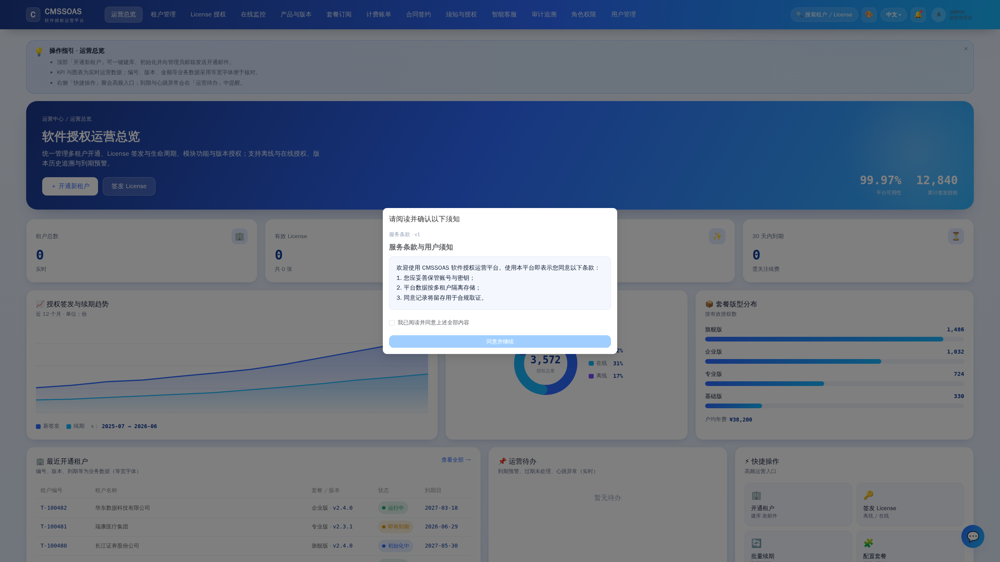
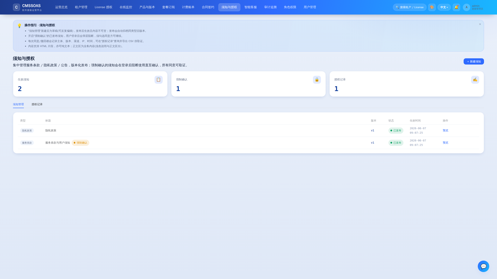
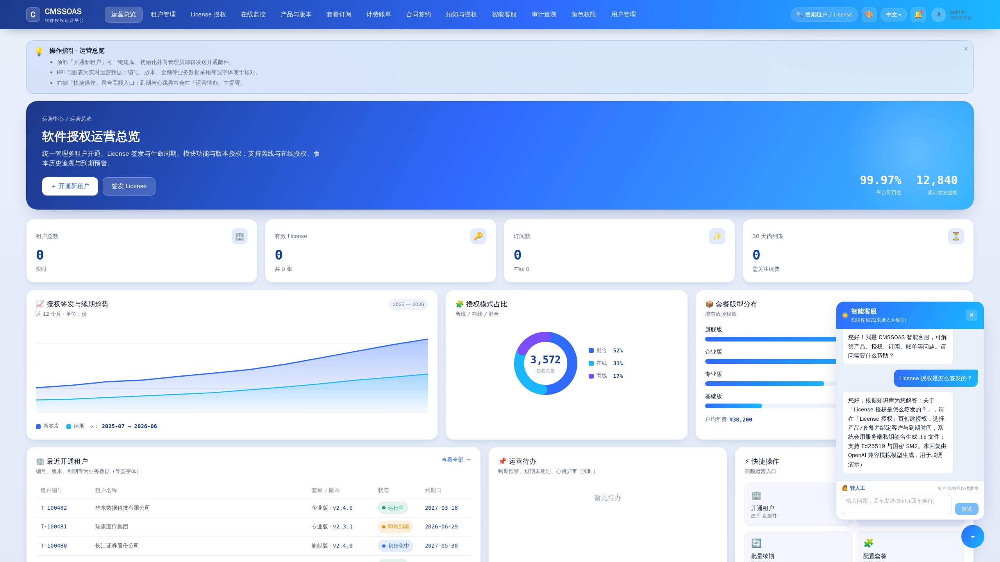
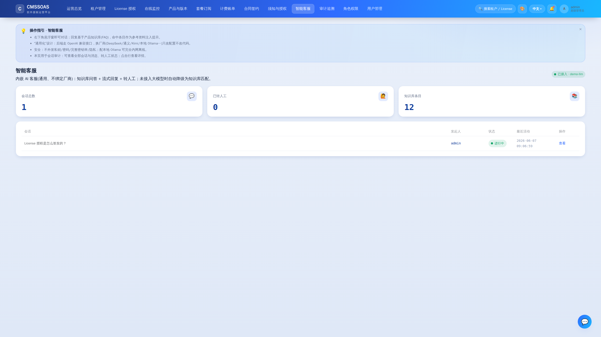
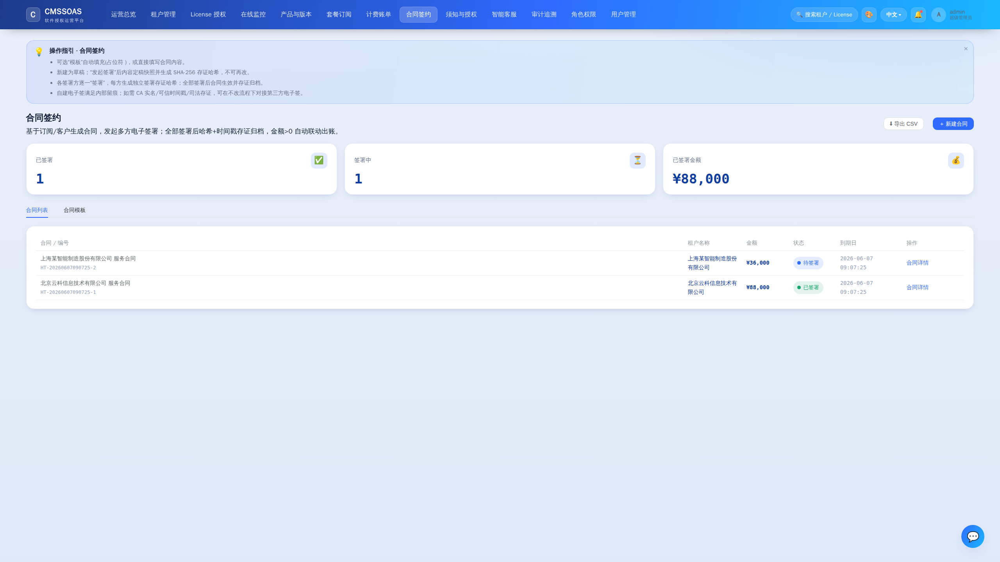
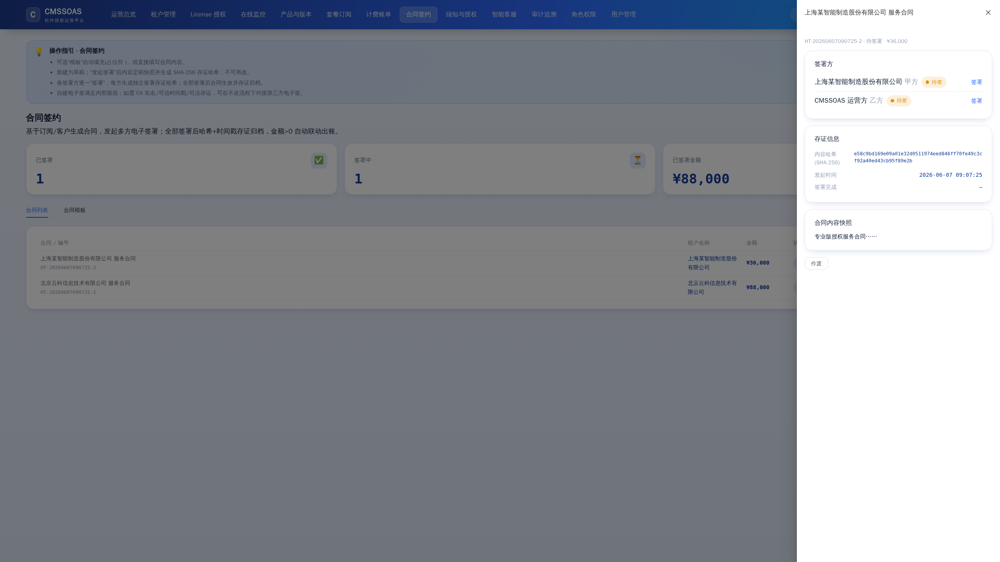

文档首页 / 功能说明：在线用户须知 / 用户授权 / 智能客服 / 合同签约
功能说明：在线用户须知 / 用户授权 / 智能客服 / 合同签约
本文为这四项能力的操作文档 + 帮助文档 + 接口说明。设计遵循平台既有风格: 统一鉴权(JWT +
@RequirePerm)、统一审计(audit_log)、统一前端(换肤/i18n/PageHelp/CSV 导出/blob 下载)、多租户隔离。 页面级均提供功能简介(浅色说明字体,与业务数据等宽字体区分)与 💡 操作指引(可收起/重开)。
权限点(随启动由 DataInitializer 自动授予 SUPER_ADMIN):
| 菜单 | 权限点 | 说明 |
|---|---|---|
须知与授权 notice | notice:view / notice:edit / consent:view | 查看 / 编辑发布 / 授权记录 |
智能客服 cs | cs:use / cs:view | 使用对话 / 会话审计 |
合同签约 contract | contract:view / contract:edit / contract:sign | 查看 / 创建发起 / 签署 |
一、在线用户须知 + 用户授权(同意管理)
操作流程
- 进入「须知与授权 → 须知管理」,点击「新建须知」,选择类型(服务条款/隐私政策/用户须知/公告),填写标题与内容(支持 HTML 或纯文本)。
- 新建后为 草稿(DRAFT),可反复编辑;确认无误后点「发布」→ 版本生效(PUBLISHED),内容自此不可变,同类型旧版自动归档(ARCHIVED)。
- 开启「强制确认(forceAck)」的已发布须知:用户登录控制台后,
NoticeGate弹层会阻断使用,逐条勾选「我已阅读并同意」方可继续;每次确认写入一条 GRANTED 授权记录(含主体/版本/渠道/IP/UA/时间)。 - 「授权记录」页可查询全部同意/撤回记录,并「导出 CSV」供取证。
关键设计
- 版本化:发布即定稿;以"用户当时同意的版本"为准,历史可追溯。
- 公开页:最终用户(无需登录)可经
/pub/notices/active阅读当前生效须知、经/pub/consents提交同意/撤回。 - 合规:记录 IP/UA/版本/时间;撤回后应停止对应数据处理/营销。
接口
| 方法 | 路径 | 权限 | 说明 |
|---|---|---|---|
| GET | /api/notices | notice:view | 须知列表 |
| POST | /api/notices | notice:edit | 新建草稿 {type,title,contentHtml,forceAck} |
| PUT | /api/notices/{id} | notice:edit | 编辑草稿 |
| POST | /api/notices/{id}/publish | notice:edit | 发布生效 |
| GET | /api/notices/pending | 登录即可 | 当前用户待强制确认须知 |
| POST | /api/notices/{id}/ack | 登录即可 | 当前用户确认(写 GRANTED) |
| GET | /api/notices/consents | consent:view | 授权记录 |
| GET | /api/notices/consents/export.csv | consent:view | 导出 |
| GET | /pub/notices/active?type= | 公开 | 当前生效须知 |
| POST | /pub/consents / /pub/consents/revoke | 公开 | 外部用户同意/撤回 |
二、智能客服(通用、不绑定厂商、简单)
核心原则
provider-agnostic + 极简:统一走 OpenAI 兼容接口 POST {base-url}/chat/completions(stream:true), 兼容 OpenAI / DeepSeek / 通义千问 / 文心 / Kimi / 智谱 / one-api 网关 / 本地 Ollama。 换厂商=改配置不改代码。后端用 JDK 自带 HttpClient,零厂商 SDK、零额外依赖。
配置(env / Nacos,密钥不落明文)
app:
ai:
enabled: ${AI_ENABLED:false} # 关闭时客服窗仍可用,走"知识库降级"
base-url: ${AI_BASE_URL:} # 如 https://api.deepseek.com/v1 或 http://127.0.0.1:11434/v1(Ollama)
api-key: ${AI_API_KEY:} # 经 env/Nacos/KMS 注入;本地模型可留空
model: ${AI_MODEL:deepseek-chat} # 或 qwen-plus / gpt-4o-mini / llama3.1
timeout-sec: 60
history-limit: 12- 切换 DeepSeek:
AI_ENABLED=true AI_BASE_URL=https://api.deepseek.com/v1 AI_API_KEY=sk-xxx AI_MODEL=deepseek-chat - 切换本地离线 Ollama:
AI_ENABLED=true AI_BASE_URL=http://127.0.0.1:11434/v1 AI_MODEL=llama3.1(无需 key,全程内网不出公网)
工作机制
- 用户在控制台右下角悬浮窗(
CsWidget)提问。 - 后端
KnowledgeBase用字符 2-gram 关键词召回classpath:knowledge/faq.md中最相关的 FAQ(无向量库)。 - 召回片段 + 护栏写入
system提示,连同会话历史(截断)与问题发往上游;读上游 SSE 转发为本服务 SSE,前端逐字渲染。 - 优雅降级:未配置上游(
app.ai未就绪)时,直接返回知识库命中内容,客服窗照常可用。 - 转人工:点「转人工」→ 会话置 ESCALATED 并留存,人工跟进。
安全护栏
- 系统提示限定"仅答本产品相关、不外泄私钥/密码/完整密钥串/隐私、不执行写操作"。
- 不向模型发送任何敏感凭据;
AI_API_KEY仅服务端持有。 - 知识库
docs/../knowledge/faq.md可自行增补条目(## 问题+ 正文,空行分隔)。
接口
| 方法 | 路径 | 权限 | 说明 |
|---|---|---|---|
| GET | /api/cs/status | cs:use | 是否接入大模型/模型名/知识库条目数 |
| POST | /api/cs/chat | cs:use | SSE 流式对话 {conversationId?,question};事件 meta/delta/done |
| POST | /api/cs/{id}/escalate | cs:use | 转人工 |
| GET | /api/cs/conversations/mine | cs:use | 我的会话 |
| GET | /api/cs/conversations | cs:view | 全部会话(审计) |
| GET | /api/cs/conversations/{id}/messages | cs:use | 会话消息 |
三、合同签约(自建电子签:哈希 + 时间戳存证)
操作流程
- (可选)「合同模板」新建模板,正文用占位符
{{customer}} {{amount}} {{plan}} {{tenant}} {{date}}。 - 「合同列表 → 新建合同」:选模板自动填充(或手填内容),填写客户、金额、签署方(可多方)。生成 草稿(DRAFT)。
- 「发起签署」:内容定稿快照 + 生成 SHA-256 存证哈希(content_hash),生成合同编号,状态 → SENT,内容不可再改。
- 各签署方点「签署」:每方生成独立签署存证哈希(content_hash + 名称 + 时间);部分签署为 SIGNING。
- 全部签署 → 状态 SIGNED、记录签署完成时间并存证归档;若金额>0,自动联动出账(在「计费账单」生成 CONTRACT 类账单)。
- 未签署完成的合同可「作废(VOID)」;已签署不可作废。「导出 CSV」含编号/金额/状态/存证哈希。
选型说明
- 当前为自建签章留痕(哈希+时间戳),满足内部留痕/低成本场景。
- 如需更强法律效力(CA 实名、可信时间戳、司法存证),可在不改业务流程前提下新增第三方电子签实现(e签宝/法大大/DocuSign),仅替换签署环节。
接口
| 方法 | 路径 | 权限 | 说明 |
|---|---|---|---|
| GET | /api/contracts | contract:view | 合同列表 |
| GET | /api/contracts/{id} | contract:view | 合同 + 签署方 |
| POST | /api/contracts | contract:edit | 新建 {templateId?,customer,amount,parties[],...} |
| POST | /api/contracts/{id}/send | contract:edit | 发起签署(存证) |
| POST | /api/contracts/{id}/sign/{partyId} | contract:sign | 某方签署 |
| POST | /api/contracts/{id}/void | contract:edit | 作废 |
| GET | /api/contracts/export.csv | contract:view | 导出 |
| GET/POST | /api/contracts/templates | view/edit | 模板列表/新建 |
数据库迁移
V11__notice_consent.sql:notice/user_consent+ 权限点V12__customer_service.sql:cs_conversation/cs_message+ 权限点V13__contract.sql:contract_template/contract/contract_party+ 权限点
安全与部署要点
- 全部密钥(AI、电子签、短信)统一经 env/Nacos/KMS 注入,不落明文(见
docs/密钥管理-KMS.md)。 - 智能客服可配本地 Ollama 实现完全内网离线;如用云端厂商,CentOS 网络策略需放行所配
base-url。 - 同意/合同/会话留存最小化、可导出;撤回后停止对应处理。
界面截图

登录前强制确认须知 须知版本化发布管理
须知版本化发布管理

同意 / 撤回留痕（主体/版本/渠道/IP/时间）
智能客服流式对话
会话审计
合同列表与状态流转
合同详情：SHA-256 定稿存证与逐方签署